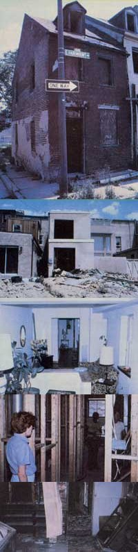

There's a whole new kind of low-cost property available in this country . . . and people who are willing to invest a little time, effort, and money are getting some great bargains.
Urban Homesteading
A hundred years ago, "go west, young man" was good advice .. . after all, the western sky was big and clear, and land was free for the taking. Well, the Homestead Act was repealed in 1976, and there isn't any more undeveloped "free land" to be had in the United States. But-as many people are discovering-it's still possible to homestead ... in the heart of many American cities! And in these days of fuel shortages and transportation problems, folks with urban jobs are finding out that "citysteading" can be energy-efficient and-in general-not a bad idea at all!
Urban homesteading programs-which allow people to purchase (for a dollar down!) and renovate decaying urban properties-came about as a response to the metropolitan housing crisis of the late 1960's. About that time, the middle-class flight to the suburbs had led to an increased need for city services on the part of the poor who remained behind . . . and taxes rose as the tax base fell.
Many landlords-neglecting required maintenance-squeezed the last penny from their properties and then walked away from back-tax bills. The abandoned buildings began to blight entire neighborhoods, more and more property dropped from the tax rolls, and the cycle of vandalism and arson took hold.
The original citysteading programs-which started in 1973 in Wilmington, Delaware ... Philadelphia, Pennsylvania ... and Baltimore, Maryland-were begun to help break the cycle of urban decline. Then, in 1974, the federal government entered the picture with the passage of the Housing and Community Development Act ... and the stockpile of federally owned homes (most of which resulted from defaults on FHA mortgages) joined the numbers of municipally owned taxdelinquent buildings. By 1975, demonstration programs were underway in 23 cities . . . and now, nearly 90 urban areas participate!
HOW IT WORKS
MOTHER recently sent staffer Peter Hemingson to Baltimore to observe the workings of what's generally considered one of the best urban homesteading programs. Both city-owned and federally repossessed houses are included in the Chesapeake Bay city's setup, and-while some requirements differ from one piece of property to another-the general homesteading procedure is the same.
The Baltimore Department of Housing and Community Development selectsfrom a pool of tax-delinquent homes, FHA foreclosures, and buildings acquired in urban development programs-houses that are suitable for renovation. The list of properties is announced, and the public is invited to apply for their purchase. (The Baltimore program has no residency requirements, but some city programs do have such limitations.)
While applications come in from prospective buyers, the city decides what repairs will be necessary to bring each piece of property up to building code specifications, and prepares an estimate of the costs that will be involved. The applicants for each property are evaluated-with particular emphasis placed on their ability to pay for the rehabilitation-and the successful homesteader is finally chosen by a lottery.
NEW WINE IN OLD BOTTLES
The next step in the process is the selection-by the owner-to-be-of a contractor ... who prepares a bid which is submitted to the future occupant of the house and to the Department of Housing and Community Development. If both the homesteader and the city approve the bid, financing is arranged . . . fire insurance is obtained . . . and the applicant receives a lease on the property.
When a federally owned property is involved, the homesteader must occupy the dwelling for 3-1/2 years . . . including a six-month period that's allotted to bring the house up to code. City-owned properties must also be brought up to code within six months . . . but the further occupancy called for is only 18 months.
At the end of the required time period-assuming that the renovation has been completed and all the water, gas, and electric bills have been paid-the homestead er puts down his or her dollar . . . the city transfers title to the property to its new owner ... and the loan that made the renovation possible is rolled over into a mortgage.
While the rehabilitation is under way, city inspectors make frequent visits to check the quality (and progress) of the contractor's work . . . and the transfer of title takes place only after the reconstruction has been done to the satisfaction of both the homesteader and the DHCD.
PAYING THE PRICE
The "dollar house" is a catchy concept, but obviously it doesn't reflect the actual costs of urban homesteading. Typically, city-owned dwellings-most of which were rental properties before they were seized for back taxes-require almost total renovation: Sometimes this includes all-new electrical, plumbing, and heating systems . . . a new roof and interior walls . . . major work on ceilings and floors . . . and even complete kitchens and baths.
Often, exterior work (such as cleaning, painting, pointing or replacing brickwork, repair of sidewalks, and-occasionally-connection to sewers) is also required. Clearly, such jobs can be expensive: The average rehabilitation costs of a Baltimore city-owned property can run between $25,000 and $45,000, depending on the amount of custom work above the code requirements that the homesteader decides to undertake.
And what about "sweat equity", you may ask? Well, it's possible that doing it yourself can make ad if ference-especially with such jobs as interior painting-but the city requires that you know what you're doing and that you prove it before you attempt any major improvement. (All code work-including electricity, heating, and plumbing-must be done by licensed professionals.)
It's a rule of thumb that a gross income of about $25,000 is necessary to support a $40,000 city-owned homestead renovation . . . assuming that the family has no large outstanding debt. However, the federally owned houses cost less to homestead, since the FHA repossessions tend to have been private homes that need less work in order to be brought up to code. In Baltimore, the average rehabilitation cost for such homes is $21,000 ... while some dwellings have been successfully homesteaded for as little as $5,000!
"REAL" TO THE RESCUE
There are also aid programs that help make citysteading less of a financial burden. The federal government, for instance, offers the Section 312 Rehab Loans program ... under which homesteaders can borrow up to $27,000. Priority is given to low- and moderate-income applicants-there's a sliding interest rate, from well below market up to 9%-and the money is available only for buildings in designated areas.
In addition, the city of Baltimore has its Rehabilitation Environmental Assistance Loans program-REAL-which is supported by the sale of municipal bonds. Interest on such loans is pegged at a 1% premium above the rate the city pays for the money (currently the mortgages run at 9%), and the program's popularity is clearly shown by the voters' repeated approval of the bond issues that support it. With help from these two programs, it's actually possible to finance the entire expense of a rehabilitation!
AND BENEFITS FOR ALL!
Some critics claim that a renovation project costing between $20,000 and $45,000 hardly deserves the name "homestead". Well, perhaps that's true . .. but maybe-just maybe-such people aren't taking the whole story into account. Consider: The average house that's sold these days now goes for over $60,000 . . . the absolute minimum down payment on such a dwelling would be about $3,000 ... and mortgage payments-at double-digit interest rates-are typically sky high.
Now look at the urban homestead: The cost of custom-renovating a structure is almost never more than two-thirds that of building a new one (and can be much less) . . . it's possible to have the rehabilitation completely financed, with no down payment required . . . and the mortgage costs are characteristically close to-and in some cases even less than-the rent that the owner would otherwise be paying. Additional benefits for the urban homesteader include freedom from loan payments for the first six months, a property tax exemption during the required residence period, and an interest subsidy.
Of course, some demands are placed on citysteaders, as well. They have to be willing to make their homes among the noise, dust, and confusion of renovation ... live in a "blighted" neighborhood while it's being turned around . . . and commit themselves to a period of several years, knowing that-if they have to leave for some reason-all their effort and money will be lost. On balance, though, the urban homesteader appears to have a financial edge on the purchaser of a new home ... and there are usually additional savings-for inner city residents, who are often able to live close to their work-in lowered transportation costs.
Certainly society benefits from such programs, too. The neighborhood gains as urban decay is stopped, then reversed . . . disintegrating rental properties with absentee landlords are replaced by proudly spruced-up, owner-occupied homes . . . houses that were off the tax rolls again contribute their fair share ... and that indefinable, but indispensable, sense of community (in both its physical and spiritual aspects) returns to transform life in the city!
EDITOR'S NOTE: We've used the Baltimore urban homesteading program as an example, but similar activities are underway in almost 90 cities around the country . . . from New York (with a population of close to 8,000,000) to Benton Harbor, Michigan (population approximately 20,000). For information about citysteading, you can write to the Office of Community Planning and Development, Urban Homesteading Division, Department of Housing and Urban Development, Washington, D.C. 20410. Ask for the "Urban Homesteading Fact Sheet", HUD-523-15-PA(3) ... and the "Directory of Urban Homesteading Sites". Information about programs in your locality is best obtained from your area office of HUD (look for the address in the Fact Sheet).
|
 Many urban homesteads might well appear disheartening - despite their ""dollar down"" price tags - to the prospective renovator. These two-ready-for-restoration buildings show how poorly some of the homes in ""neighborhoods on the way up"" have been maintained by absentee landlords... This attractive living room once looked as disheveled as does the one below!... But, with the kind of labor and investment cash that were often required of our nation's original homesteaders, the worst city-steads can become lovely dwellings... And the interiors are also often in need of work. |
|
|